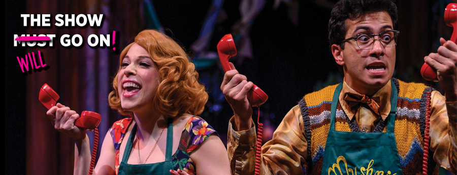

Increasing remote engagement with the Kelly Strayhorn Theater by priming users with discussion questions on the KST pre-recorded content.
Process
Stakeholder Interview l Competitive Analysis l Wall Walk l Problem Reframing l Think-aloud l Contextual Inquiry l Affinity Diagramming l Speed Dating l Experience Prototyping
MY ROLE l Research/Interview Lead
TIMELINE l October 2020 - December 2020
TEAM l Emily Zou, Sabrina Zhai, Steve Orchowsky
CLIENT l The Kelly Strayhorn Theater
Introduction
Problem
The Kelly Strayhorn is a Pittsburgh based theater that wanted us to help them increase donations, engagement, and cultivate their diverse community. The theater especially has new online oppurtunities because of COVID-19.
Goal
The goal of the research was to understand how users currently enjoy live and pre-recorded media to see how we can revitalize current theater events.
Solution
Our solution presented a way for users to interact with videos from KST by having discussion questions throughout the video. It gives them a reason to comment and engage with videos and allows for more active engagement with the art.
Background
Business is going down because people don’t have “extra” money to spend on theaters and theaters could potentially connect with essential businesses to increase engagement.
Being online can make increasing inclusivity and diversity in theatre easier since experiences can be more personalized.
The user has a lot more control over theatre experience in their home.
The Instagram events were a good way to make theatre seem less “fancy” and more casual especially since people got to interact with members of the theater. We should find other ways to do that.
There is a lack of online presence and like other theaters they can get to know their audience more personally through a stronger online presence.
Methods
Think-Aloud for Generative Research
We used the Pittsburgh Public Theater website to do a think-aloud study with the general theater audience members in Pittsburgh. We had them interact with the website in ways we thought connected to the KST goals.

Insights
Users wanted more of a variety of events.
Partnerships were underemphasized so even though users were interested in them they didn’t know how to access them.
Users were unable to register for events easily which detered them from participating.
Contextual Inquiry and Affinity Diagramming
My personal favorite part of the process was conducting the contextual interviews. It was interesting trying to conduct these over Zoom as we had to get creative so that the particiapnts could show us their space. We had the particpants show us their spaces and how they interacted with media on an everyday basis in their spaces. Our focus of the contextual inquiry was answering the question: How might we engage the theater community in participating with new events?
Evidence
P2-15: "Eating while watching, feel like no time is lost"
P3-18: "We'll talk about [shows] after more than before"
P4-15: "When you are watching tik toks you can log off the tik tok anytime you want"
Insights
Users prefer to engage with media that they can enjoy flexibly.
Users have rituals around media and how they find them.
Users enjoy enhancing their experience with other people and things.
Speed Dating
Speed dating was an also interesting tool to use online. My team created 3 storyboards each surrounding the the needs that we had identified through our previous research. The storyboards were made with increasing risk and that needs that we identified were: multitasking, communicating with others, easily finding what the shows are about, and fitting shows into their schedules.
Evidence
“The idea of being able to consume the same content at the same time I like that a lot.”
“I would love a trivia game because it would help bond and it seems fun to know how much you have been paying attention because there are points awarded.”
“Usually I would discuss the movie after the show with friends. I usually would head to some website to learn about the show."
Insights
Participants really identified with the need to connect with others and to find out more about shows. I was suprised how willing people were to have media services control their reccomendations because of services like Youtube and Netflix. While we also found that people felt that the feelings a physical space invoke were hard to replace that people still wanted to engage with others and find out more about the show.
Intial Prototype
The initial prototype built off this idea as we used a trivia idea to allow people to compete with others while also finding out more about the show. However, since we were supposed to appeal to new community members the trivia questions were too hard for them since they had no background. I wrote this interview protocol so I feel like I got a lot of experience on interviewing people.
Evidence
“Knowing more of the backstory of art makes me enjoy it more”
“I like the trivia gave me a bit of hints into the facts and how it was kind of related to the game”
Final Prototype
After testing our intial prototype we found that people actually disliked how active it was and wanted to more passively engage with the content. To remedy that we instead presented to discussion questions to both help people think more about the show and provide the theater with oppurtunity to open more discussion based events. Also, when we discussed our solution with Kelly Strayhorn theater they addressed how this might help with new theather community members have more artistic literacy. It is also easy to implement for the theater and could increase engagement on social media platforms because of the active call for discussion.
![A screenshot of a Kelly Strayhorn Theater dance performance with a overlay at the bottom that says 'What do you think is the relationship between the man and the woman?'. There are three dancers and one is in the foreground standing tall, one is on the right crouching away from the first and having their hands outward close to their body, and one is in the background farther away from the camera also standing tall. The background is red and the dancers have colorful blue and yellow clothing. The lighting is pink.](../Assets/dance/finalOne.png)